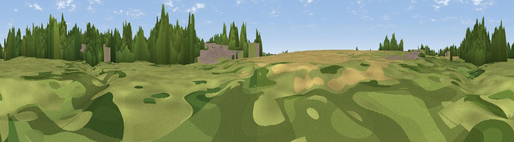

View of Meadow and Church
#45805 in England · top 94% of its area beats it · near Alconbury · footpathWhere it is
The exact computed spot (TL 18367 75848). Click the marker for map links.
Public access: a public right of way passes within 56 m of this spot. Computed from Natural England's CRoW access layer and OpenStreetMap rights of way — not the legal definitive map. Always verify locally.
The view, rendered

A 360° render of this exact spot computed from the terrain model, tree cover and land cover — summer colours, afternoon light, calibrated against photographs of famous viewpoints. Real trees, hedges and buildings will differ in detail.
The panorama
Grey silhouette: terrain skyline in each direction (720 bearings, Earth curvature and refraction included). Dashed green: skyline with trees (+15 m) and buildings (+8 m) as obstacles. Blue strip: how far the ground is visible on each bearing.
Where the view opens
Wedge length = distance to the farthest visible ground on that bearing (vegetation-aware). Rings at 10, 25 and 50 km.
What fills the view
41% grassland · 30% woodland · 19% cropland · 10% built-up
Angular shares of the visible panorama (visual magnitude), not map area. Landscape diversity 0.55 (0–1 Shannon).
Key numbers
More beautiful places nearby
The staircase of upgrades: each row has a higher view potential than everything closer. Driving times are estimates from straight-line distance, calibrated against real road routing — check an actual route before setting out.
| Place | Direction | Drive | Score |
|---|---|---|---|
| Viewpoint near Woodwalton | NE · 6 km | ~13 min | 22.3 |
| Viewpoint near Woodwalton | NE · 6 km | ~14 min | 29.3 |
| Viewpoint near Sawtry | NNW · 7 km | ~14 min | 38.0 |
| Hill summit | S · 27 km | ~43 min | 43.8 |
| Viewpoint near Finedon | W · 27 km | ~43 min | 44.8 |
| Viewpoint near Rockingham | WNW · 35 km | ~53 min | 48.7 |
| Viewpoint near Stapleford | SE · 38 km | ~57 min | 52.9 |
| Viewpoint near Royston | SSE · 39 km | ~58 min | 56.6 |
52.36791, -0.26292 · source: osm viewpoint · position refined by local search. Computed location — check access rights before visiting.